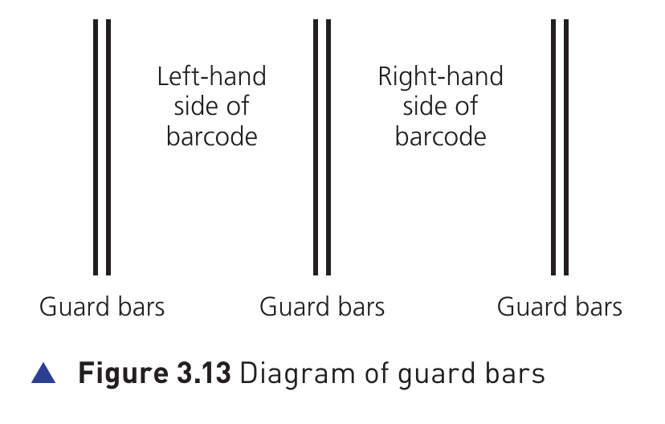
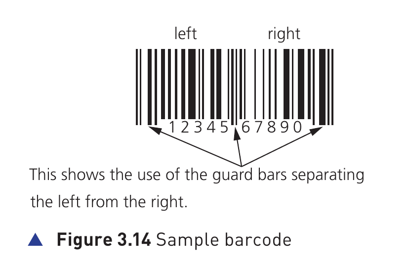
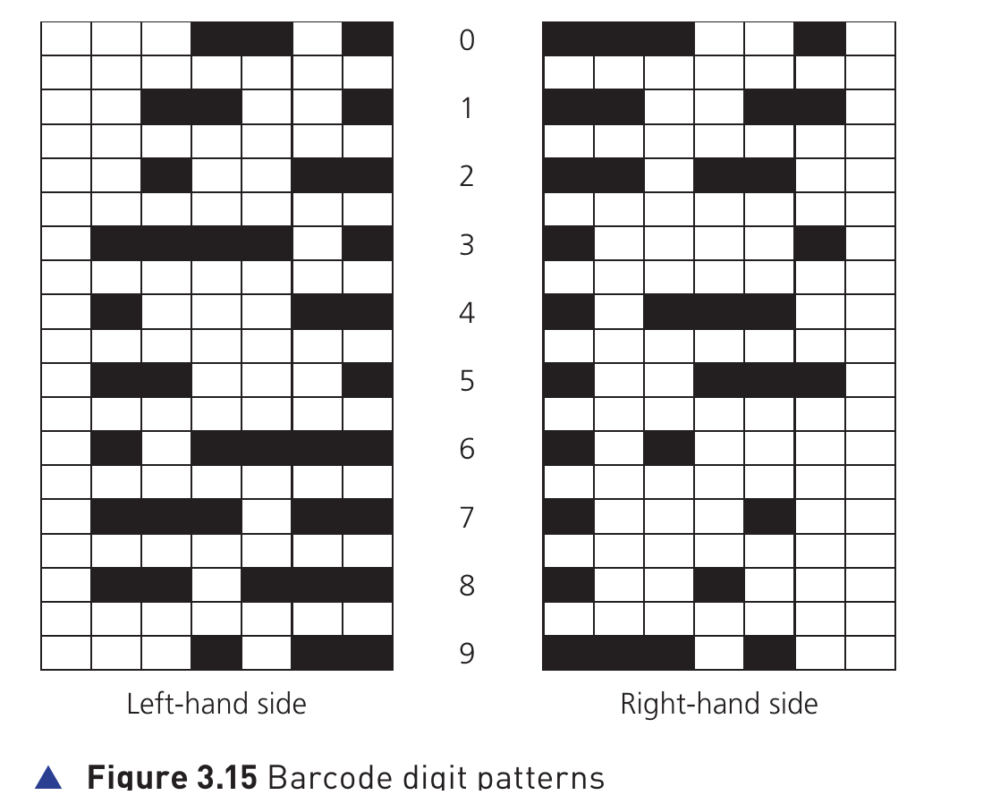
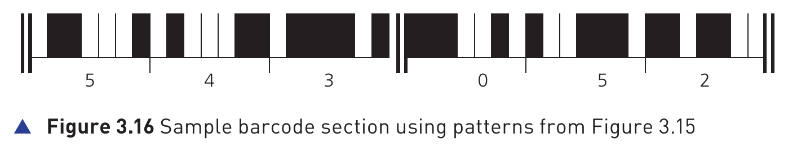

Barcode scanners · Hardware P88-P90
A barcode (条形码) is a series of dark and light parallel lines of varying thickness (不同粗细).
The numbers 0 to 9 are each represented by a unique series of lines. The textbook example adopts different codes for digits appearing on the left and for digits appearing on the right of the barcode.


Guard bars (保护条) separate the left-hand side from the right-hand side.

Figure 3.15 Barcode digit patterns
Each digit in the barcode is represented by bars of 1 to 4 blocks thick. Note there are different patterns for digits on the left-hand side and for digits on the right-hand side.
Each digit is made up of 2 dark lines and two light lines. The width representing each digit is the same.
The digits on the left have an odd number of dark elements and always begin with a light bar; the digits on the right have an even number of dark elements and always begin with a dark bar.
This arrangement allows a barcode to be scanned in any direction.

Figure 3.16 Sample barcode section
The section of barcode represents the number 5 4 3 0 5 2.
3 on the left generates the pattern L D D D D L D0 1 1 1 1 0 1, where L = 0 and D = 1| Input/output device | How it is used |
|---|---|
| keypad | to key in the number of same items bought; to key in a weight; to key in the number under the barcode if it cannot be read by the barcode reader/scanner |
| screen/monitor | to show the cost of an item and other information |
| speaker | to make a beeping sound every time a barcode is read correctly; but also to make another sound if there is an error when reading the barcode |
| Input/output device | How it is used |
|---|---|
| printer | to print out a receipt/itemised list (明细清单) |
| card reader/chip and PIN | to read the customer’s credit/debit card (either using PIN or contactless，非接触式支付) |
| touchscreen | to select items by touching an icon, such as fresh fruit which may be sold loose without packaging |
The barcode system is used in many other areas.
For example, barcodes can be utilised in libraries where they are used in books and on the borrower’s library card. Every time a book is taken out, the borrower is linked to the book automatically. This allows automatic checking of when the book is due to be returned.
A complete answer should connect four ideas:
barcode structure -> light reflection and photoelectric cells -> stock database key field -> stock update and user benefits